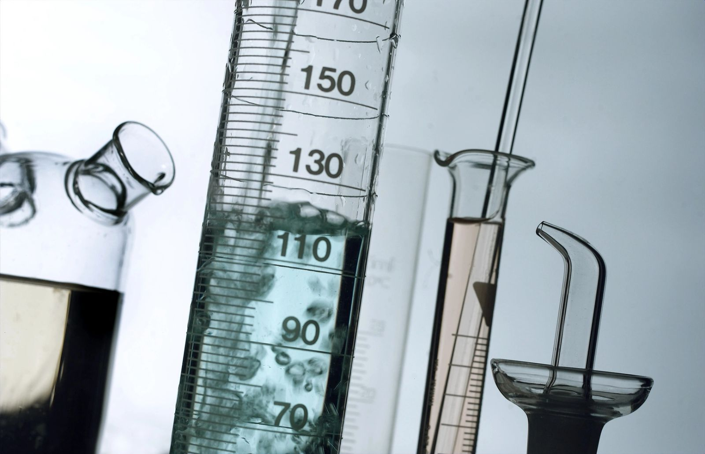

The Science
What It Does and How It Works
The SMART VALVE™ takes long established principles of pressure and fluid dynamics and applies them in a new and financially rewarding application.
The Smart Valve™ How It Works — Bubble Demonstration

The Problems With Water
There are several potential problems inherent in water delivery, usage and metering that can impact your water consumption and water costs. Most of these concerns revolve around water system pressure (PSI), flow rate (GPM) and turbulence.
- It's a simple fact that along with the volume of water passing through your water meter is a volume of air. The volume of that air will vary as the water pressure fluctuates between static and dynamic pressure. The problem is that over 99% of water meters measure by volume, regardless if that volume is liquid or gas.
- Water meters are designed to be accurate within a specific flow range (GPM). If the flow rate exceeds this range it can cause the meter to measure inaccurately, charging you for more than the actual gallonage used.
- City pressure can fluctuate significantly, causing pressure surges and drops which can cause the meter to over-spin, and which can even damage water systems and equipment. Surges also occur anytime you go from a closed system (static) to an open system (dynamic), such as when you are using no water then turn on your faucet or hose.
- Water fixtures in your building are typically designed for water pressure of no more than 65 PSI. The water pressure delivered by your municipality (city pressure) is often much higher, resulting in too much water being pushed through your fixtures and potentially leaking through seals and gaskets designed for 65 PSI, resulting in increased maintenance and replacement costs.
How The Smart Valve™ Works
Air Compression
The SMART VALVE™ air compression benefit works on all single jet, multi jet, and turbine category positive displacement meters. These make up over 99% of all water meters in use. The physics are based upon Boyle's Law regarding gas pressure and volume, and Le Chatelier's Principle of volumetric dynamics. The SMART VALVE™ is installed in the water line on the USER side of the water meter. The variable spring-loaded plunger maintains a constant 'backpressure'. This pressurized column of water extends upstream through and past the water meter. When any air reaches this pressurized water, the air becomes compressed and no longer maintains any volume. It passes by the water meter in this compressed state until after it passes through the SMART VALVE™ and soon returns to its original uncompressed state. The SMART VALVE™ does NOT physically remove the air from the water — it just eliminates the volume of the air and prevents the water meter from measuring it. A common example of entrained gasses in fluid is shaking up a soda bottle: the gasses are trapped in the soda but have no volume until you remove the bottle cap. Once you remove the cap and reduce the pressure, the gasses suddenly have a lot of volume! The SMART VALVE is like the bottle cap, keeping the system pressurized at the water meter. You won't notice any difference in the water coming into your facility, but you will notice that your water meter is now spinning less.
Pressure and Flow Stabilization
Another way in which water meters can be inaccurate is during very high or low flow, or during a pressure surge. Water meters are designed to be accurate within a specific flow range. If the flow exceeds this range it can cause the metering to overread consumption — especially true during a surge, such as when there is no water flowing, resulting in a higher static pressure which can create an initial surge when the water line is opened and pressure suddenly drops to the lower dynamic pressure. Surges can also be caused by variability in the municipal water supply. The SMART VALVE's™ proprietary variable spring-loaded technology eliminates these peaks and valleys, creating a smooth, even flow that keeps your meter readings more accurate and protects against damage that can occur from a surge.
Reduced Consumption
An effect of creating backpressure upstream is a corresponding pressure drop downstream. With the 2nd Generation SMART VALVE™ we can precisely control the amount of pressure drop, from a little to a lot, to fit your system needs. A positive side effect of this pressure drop is that it will save the user additional money in reduced water consumption in non-volumetric water uses such as showers, sinks, hoses and the like. The same five-minute shower will use slightly less water. While you won't notice it in the shower, it adds up on your water bill! Furthermore, almost all water devices are designed for approximately 60–65 psi water supply. A higher psi can cause excessive water delivery and even leaks at seals and gaskets that can often go undetected. In these cases, a pressure reducer is typically used to maintain 60–65 psi to the facility. Unfortunately, these devices require maintenance and often fail. The SMART VALVE™ can act like a controllable pressure reducer in high-PSI water systems, eliminating the problems caused by excessive water pressure.
Other Benefits
By virtue of its design the SMART VALVE™ acts as a secondary back flow preventer to protect the municipal water supply. This is becoming more and more important as municipalities seek to better protect our water reserves from contamination.
The Bottom Line
The Smart Valve™ Will:
- Keep the water line pressurized at the meter to avoid being charged for air volume
- Keep your flow rate in the desired range for additional water meter accuracy
- Reduce excessively high water pressure
- Eliminate over consumption due to high pressure
- Conserve water, especially in facilities without pressure reducers or flow regulators
- Act as a shock absorber against pressure surges and drops
The Smart Valve™ will save you money and water, and it works 24/7/365 with no maintenance needed. All you have to do is set it and forget it. The only difference you will notice will be in your wallet. WE GUARANTEE IT.